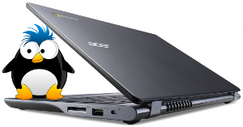

Replace Chrome OS permanently with Lubuntu 14.04 LTS Linux on the Acer C720 Chromebook.
Running a full-featured Linux on this little laptop is a delight: lightweight, several hours battery life, inexpensive, and snappy performance using the LXDE desktop.
This device is available in a few different configurations. Mine is the non-touchscreen model C720-2848 with (non-expandable) 2GB RAM and a (user-replaceable) 16GB SSD [1].
Let's go!
0. Recovery Image
Create a recovery image of Chrome OS (my C720 is model PEPPY C6A-N3C-A7O) to enable restoring the Chromebook to its default configuration. This will require a spare USB stick of 2GB or better:
- Log into the Chromebook and let it auto update, as there sometimes are firmware updates... check the updating status in the browser at chrome://help
- Insert the USB stick, enter chrome://imageburner and follow the directions to generate a recovery image
1. Prepare install media
Download the 64-bit trusty minimal installer and flash the image to a USB stick. An alternative (my choice) is adding the image to a USB stick with multiple Linux installers. Using the minimal console installer vs. the graphical Lubuntu installer provides more options during setup [2].
2. SeaBIOS
SeaBIOS in combination with coreboot provides an open-source legacy BIOS that enables access to the MBR and the ability to install an alternative OS on the Chromebook. All this good stuff involves jumping through a few simple hoops and not trembling in fear at the "scary white screen" that pops up at power up stating that the boot loader detects something is very very wrong with the Chromebook and helpfully suggests pressing the spacebar to begin recovery. Do not press the spacebar or the Lubuntu installation will be wiped from disk!
There are 2 different methods for configuring SeaBIOS in preparation for installing Lubuntu. The first method uses a few simple commands in the Chrome OS shell to place the Chromebook into developer mode and allow booting the USB install media and replacing Chrome OS with Lubuntu. The drawback is that scary screen appears at every boot and you must press CTRL+L to boot to legacy-mode and onward to GRUB and Lubuntu (and ignore the helpful prompt to press spacebar and inadvertently begin the adventure of wiping clean the SSD).
The second method involves setting new flags for the write-protected Google Binary Block (GBB) in the device firmware. Delay at the boot screen can be reduced to a one second timeout and the legacy-mode BIOS set as the system default (no key combo required). Pressing the spacebar is disabled from doing any harm to Lubuntu (the Chromebook just beeps). The drawback is that it involves the (very simple) removal of the device's bottom cover and the temporary removal of the write-protect screw from the motherboard to permit flashing new flags to the GBB... and this may void the Chromebook's warranty (one of the case screws lies underneath a sticker declaring the warranty void if disturbed).
Experimenting with alternate OS installs on the Chromebook I first employed the developer mode method followed by the write-protect screw removal. I prefer configuring the device to default to legacy-mode BIOS but I have employed both methods successfully and describe their respective steps below.
No guarantees, though... Hopefully you enjoy equal success!
2.1 Write-Protect Screw Method
Disconnect power. Turn the Chromebook over facing bottom up and remove the 13 screws (not missing the one hidden under the warranty sticker). Gently pry the case off starting with the seam where the display connects to device. It comes away pretty easy.
This is what you see:

[ Image: [3] The battery lock screw is #6 and the write-protect screw is #7 ].
WARNING! This will wipe out whatever is installed on the SSD:
- Remove the write-protect screw
- Close back cover using only the battery lock screw to hold in place
- Re-connect power, boot Chromebook and wait until it displays:
Chrome OS is missing or damaged.
Please insert a recovery USB stick or SD card.
- Insert USB recovery media prepared in Step 0 and it will proceed to restore Chrome OS and reboot
- At default Chrome OS "Welcome!" screen open a terminal CTRL+ALT+F2 (Right-arrow)
- Login as chronos (no password), then enter sudo su for superuser access
Set new GBB flags using the set_gbb_flags.sh script in Chrome OS. To enable short developer mode screen (1 second timeout) followed by default legacy mode boot use these flags:
GBB_FLAG_DEV_SCREEN_SHORT_DELAY 0×00000001
GBB_FLAG_FORCE_DEV_SWITCH_ON 0×00000008
GBB_FLAG_FORCE_DEV_BOOT_LEGACY 0×00000080
GBB_FLAG_DEFAULT_DEV_BOOT_LEGACY 0×00000400
... which adds up to running in the shell:
set_gbb_flags.sh 0x489
Shutdown with:
# shutdown -h now
... and disconnect the power:
- Remove the bottom cover again and reinstall the write-lock screw to protect the BIOS
- Close cover and reinstall all the case screws
Re-connect the power, insert the USB stick prepared in Step 1, and power up the Chromebook [4].
Sources: Useful GBB flags for another new free software machine
2.2 Developer Mode Method
The alternative to removing the write-protect screw above is to place the Chromebook into developer mode using the Chrome OS shell before booting the USB install media:
- With the Chromebook off... Hold down ESC+F3 (Refresh) keys and power on the device
- Invoke Recovery, and at the Recovery screen press Ctrl+D
- Device will prompt for confirmation, press ENTER and the system reboots into developer mode
- Scary white boot screen appears and you need to press Ctrl+D to continue boot [5]
Enable the USB Boot and Legacy BIOS modes by opening the shell with Ctrl+Alt+T and enter shell. Set dev_boot_usb and dev_boot_legacy to active:
$ sudo crossystem dev_boot_usb=1
$ sudo crossystem dev_boot_legacy=1
Insert the USB stick prepared in Step 1, reboot the Chromebook and press CTRL+L at the boot screen to enter legacy boot mode.
Source: Chromium OS developer information for the Acer C720 Chromebook
3. Install Lubuntu
My visual screenshot tour of installing Lubuntu 14.04 - a Long Term Support (LTS) release.
The Chromebook's SSD is divided into 3 partitions:
- sda1 is a 300MB boot partition
- sda2 is a 512MB LUKS encrypted swap partition using a random key
- sda3 uses the remaining space as a LUKS encrypted root partition using a passphrase
4. Touchpad
Lubuntu installs the 3.13 Linux kernel and does not support the Chromebook's touchpad. Download and install the more recent 3.17 kernel from Ubuntu MainlineBuilds to fix:
$ wget -c http://kernel.ubuntu.com/~kernel-ppa/mainline/v3.17.1-utopic/linux-headers-3.17.1-031701-generic_3.17.1-031701.201410150735_amd64.deb
$ wget -c http://kernel.ubuntu.com/~kernel-ppa/mainline/v3.17.1-utopic/linux-headers-3.17.1-031701_3.17.1-031701.201410150735_all.deb
$ wget -c http://kernel.ubuntu.com/~kernel-ppa/mainline/v3.17.1-utopic/linux-image-3.17.1-031701-generic_3.17.1-031701.201410150735_amd64.deb
$ sudo dpkg -i linux*.deb
... and reboot.
Create a touchpad configuration file in /etc/X11/xorg.conf.d:
$ sudo mkdir /etc/X11/xorg.conf.d
$ sudo cp /usr/share/X11/xorg.conf.d/50-synaptics.conf /etc/X11/xorg.conf.d/50-c720-touchpad.conf
Modify this file to adjust timeouts, add tap-mouse actions (2-finger tap = right-click, 3-finger tap = middle-click), and 2-finger scrolling.
My own sample config:
Section "InputClass"
Identifier "touchpad peppy cyapa"
MatchIsTouchpad "on"
MatchDevicePath "/dev/input/event*"
MatchProduct "cyapa"
Option "FingerLow" "5"
Option "FingerHigh" "5"
Option "VertEdgeScroll" "0"
Option "VertTwoFingerScroll" "1"
Option "HorizTwoFingerScroll" "1"
Option "AreaRightEdge" "850"
Option "AreaLeftEdge" "50"
Option "TapButton1" "1"
Option "TapButton2" "3"
Option "TapButton3" "2"
EndSection
Sources: 50-c720-touchpad.conf (github.com/vonbrownie), and pages for Touchpad Synaptics and the C720 on ArchWiki
5. SSD
The swappiness parameter controls the preference of the kernel to move processes out of physical memory to the swap partition. Range is 0-100, default is set to 60 and lower values cause the kernel to avoid swapping and higher values prompt more frequent swap use.
Check the current swappiness value:
$ cat /proc/sys/vm/swappiness
To reduce writes on the SSD set a low value of 1 by setting vm.swappiness=1 in /etc/sysctl.conf.
TRIM optimizes SSD performance and is enabled by adding the discard option to /etc/crypttab and /etc/fstab. Lubuntu auto-magically configures crypttab but fstab needs to be set manually.
Sample fstab:
# <file system> <mount point> <type> <options> <dump> <pass>
/dev/mapper/sda3_crypt / ext4 noatime,discard,errors=remount-ro 0 1
# /boot was on /dev/sda1 during installation
UUID=[some_long_random_string] /boot ext4 noatime,discard 0 2
/dev/mapper/sda2_crypt none swap sw,discard 0 0
After modifying fstab update /boot/initrd.img-* by running:
$ sudo update-initramfs -u -k all
6. Suspend
To enable suspend-and-resume [6] create /etc/initramfs-tools/scripts/init-top/unbind_ehci with the following:
PREREQ=""
prereqs()
{
echo "${PREREQ}"
}
case ${1} in
prereqs)
prereqs
exit 0
;;
esac
log_success_msg "Unbind ehci for preventing error"
echo -n "0000:00:1d.0" > /sys/bus/pci/drivers/ehci-pci/unbind
exit 0
... and make it executable:
$ sudo chmod 755 /etc/initramfs-tools/scripts/init-top/unbind_ehci
Create a new udev rule /etc/udev/rules.d/10_disable-ehci.rules with the following:
ACTION=="add", SUBSYSTEM=="pci", DRIVER=="ehci_hcd", \
RUN+="/bin/sh -c 'echo -n %k > %S%p/driver/unbind'"
Update /boot/initrd.img-* by running:
$ sudo update-initramfs -k all -u
Configure boot options in /etc/default/grub:
GRUB_CMDLINE_LINUX_DEFAULT="quiet splash acpi_osi=Linux acpi_backlight=vendor add_efi_memmap boot=local i915.modeset=1 tpm_tis.force=1 tpm_tis.interrupts=0 nmi_watchdog=panic,lapic intel_pstate=enable"
... save the changes and run:
$ sudo update-grub
A bit of a tug-of-war can erupt between systemd-logind and the xfce4-power-manager when setting the closing/opening of Lubuntubook's lid to trigger suspend/resume. I grant precedence to the settings in the power manager by disabling the LidSwitch event in logind.
Add this line in /etc/systemd/logind.conf:
HandleLidSwitch=ignore
... and restart the service:
$ sudo restart systemd-logind
Suspend now works reliably when triggered from Lubuntu's shutdown menu. Chromebook will go to sleep and pushing the power button/opening the lid will resume the system with the desktop locked and a password prompt [7].
Sources: unbind_ehci and 10_disable-ehci.rules (github.com/vonbrownie), C720 suspend tips, and configuring grub
7. Keyboard Shortcuts
Top row on the keyboard with the shortcut icons (brightness, volume, etc.) identify in Linux as the F1-F10 keys and the Search key (in the CapsLk position) acts as the Super (Windows) modifier key.
Create keyboard shortcuts by first installing:
- xbindkeys - associate keys to shell commands
- xbacklight - set backlight level using RandR
- pulseaudio-utils - manage sound with pactl
- xvkbd - send characters to another client
$ sudo apt-get install xbindkeys xbacklight pulseaudio-utils xvkbd
7.1 Direction, Brightness, Volume, Page Keys
$ xbindkeys -k
Enable the function keys to modify the sound and brightness settings by creating $HOME/.xbindkeysrc:
# backward/forward
"xvkbd -xsendevent -text "\A\[Left]""
F1
"xvkbd -xsendevent -text "\A\[Right]""
F2
# backlight decrease/increase
"xbacklight -dec 10"
F6
"xbacklight -inc 10"
F7
# volume mute/decrease/increase
"pactl set-sink-mute alsa_output.pci-0000_00_1b.0.analog-stereo toggle"
F8
"pactl set-sink-volume alsa_output.pci-0000_00_1b.0.analog-stereo -- -10%"
F9
"pactl set-sink-volume alsa_output.pci-0000_00_1b.0.analog-stereo -- +10%"
F10
# page up/down, home, end
"xvkbd -xsendevent -text '\[Page_Up]'"
Alt + Up
"xvkbd -xsendevent -text '\[Page_Down]'"
Alt + Down
"xvkbd -xsendevent -text '\[Home]'"
Alt + Left
"xvkbd -xsendevent -text '\[End]'"
Alt + Right
Enable the new key shortcuts by running:
$ xbindkeys
Lubuntu auto-detects $HOME/.xbindkeysrc and will run xbindkeys on the next login.
Sources: xbindkeysrc-chromebook (github.com/vonbrownie), Xbindkeys, and another sample Chromebook-friendly xbindkeysrc
7.2 Power Key
Power key in upper-right corner ignores any configuration in the window manager and triggers poweroff without delay when pressed (easy to do by accident as its positioned next to backspace).
If you want to disable the power key edit /etc/systemd/logind.conf and set HandlePowerKey=ignore.
8. Wireless (optional)
There are a few settings to modify if you want to monkey with the Chromebook's wireless chipset to improve performance [8].
To identify the card and parameters:
$ lspci | grep -i net
01:00.0 Network controller: Qualcomm Atheros AR9462 Wireless Network Adapter (rev 01)
$ modinfo ath9k | grep parm
parm: debug:Debugging mask (uint)
parm: nohwcrypt:Disable hardware encryption (int)
parm: blink:Enable LED blink on activity (int)
parm: btcoex_enable:Enable wifi-BT coexistence (int)
parm: bt_ant_diversity:Enable WLAN/BT RX antenna diversity (int)
parm: ps_enable:Enable WLAN PowerSave (int)
parm: use_chanctx:Enable channel context for concurrency (int)
Create /etc/modprobe.d/ath9k.conf with the following options:
options ath9k nohwcrypt=1 btcoex_enable=1 bt_ant_diversity=1
Sources: ath9k.conf (github.com/vonbrownie), ath9k wireless driver and bluetooth coexistence
9. Helpful Resources
- My personal Lubuntubook configurations (github.com/vonbrownie)
- CrunchBang Linux on the Acer C720
- Arch Linux C720 installation with useful post-install details
- Ongoing discussion thread about configuring Chromebooks
- Turn Chromebooks into Ubuntu-based code learning machines for kids
Happy hacking!
Notes
| [1] | Device information output of lshw, lspci, and lsusb. |
| [2] | Specifically in this instance, the Ubuntu console installer provides a random key option for the encrypted swap partition. |
| [3] | Image courtesy of Chromium. |
| [4] | Whenever you remove battery power to the Chromebook (like opening up the case) the hardware clock on the motherboard resets to a future year (mine travelled to 2040). Providing a network connection is up during the Lubuntu installation the system should fetch a correct time from a NTP server. Otherwise fix the fallout from an incorrect clock by re-mounting partitions read-only and correct filesystem timestamps using fsck. |
| [5] | Switching between developer and normal (non-developer) modes will remove user accounts and their associated information from your Chromebook. |
| [6] | Some HOWTOs talk about adding modprobe.blacklist=ehci_hcd,ehci_pci but in Ubuntu they are compiled into the kernel. Disabling them early in boot instead appears to do the trick. |
| [7] | However when suspend is triggered by closing or opening the lid the system correctly suspends and resumes but no screenlock. Attempting to enable suspend in light-locker led to a black screen after suspending and required a hard shutdown to recover. |
| [8] | SSH sessions on the Chromebook often "stall" when the connection has been idle for a short period... taking several seconds to "wake up" again. Creating ath9k.conf improved things but more experimenting required. |